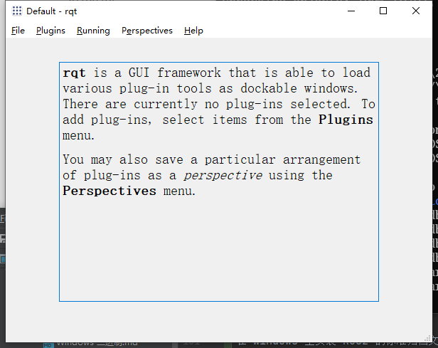
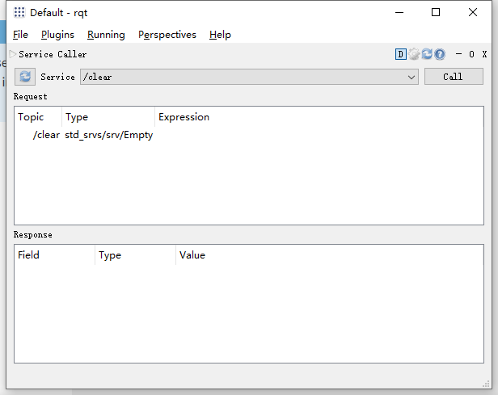
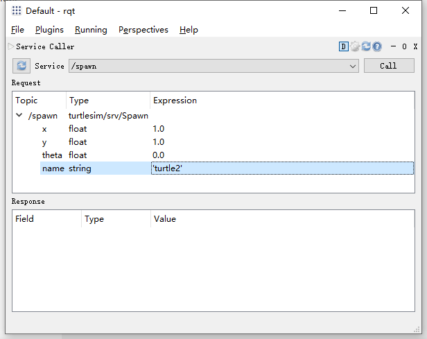
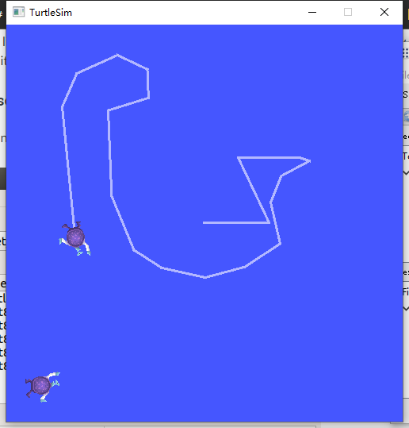
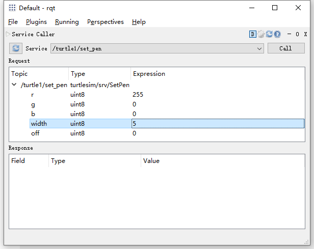
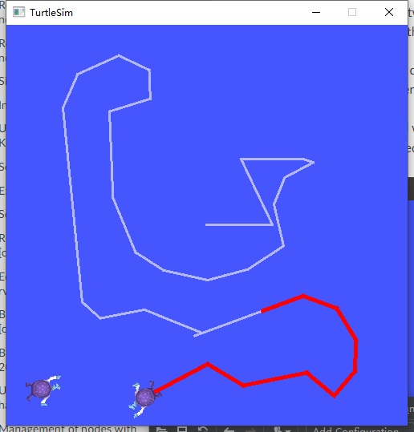
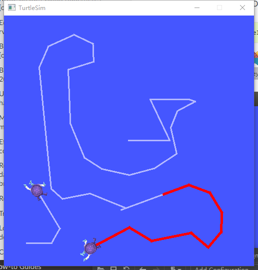

介绍 turtlesim 和 rqt
目录
背景
Turtlesim 是一个学习 ROS2 的轻量级模拟器。它说明了 ROS2 在最基本的层面上做了什么，以便让你知道稍后你将用真实的机器人或机器人模拟做什么。
rqt 是 ROS2 的 GUI 工具。在 rqt 中完成的所有操作都可以在命令行上完成，但是它提供了一种更简单、更用户友好的方法来操作 ROS2 元素。
本教程涉及 ROS2 的核心概念，如分离的 nodes、topics 和 services。所有这些概念都将在以后的教程中详细介绍; 现在，您将简单地设置工具并对它们有所了解。
前提条件
1. 安装 turtlesim
只要你安装 ROS2 的归档文件包含 ros_tutorials 存储库，你就应该已经安装了 turtlesim。
检查 turtlesim 软件包是否已安装:
ros2 pkg executables turtlesim
上面的命令应该返回一个 turtlesim 的可执行文件列表:
turtlesim draw_square.exe
turtlesim mimic.exe
turtlesim turtle_teleop_key.exe
turtlesim turtlesim_node.exe
2. 启动 turtlesim
要启动 turtlesim，请在终端中输入以下命令:
ros2 run turtlesim turtlesim_node
模拟器窗口应该出现，随机乌龟在中心。

在命令下的终端中，您将看到来自 nodes 的消息:
[INFO] [1654185059.953086400] [turtlesim]: Starting turtlesim with node name /turtlesim
[INFO] [1654185060.045926800] [turtlesim]: Spawning turtle [turtle1] at x=[5.544445], y=[5.544445], theta=[0.000000]
在这里你可以看到你的默认乌龟的名字是 turtle1，和它产生的默认坐标。
3. 使用 turtlesim
再次打开新的终端并启用 ROS2 安装配置文件。
现在您将运行一个新的 node 来控制第一个 node 中的 turtle:
ros2 run turtlesim turtle_teleop_key
这时你应该打开两个窗口: 一个运行 turtlesim_node 的终端，一个运行 turtle_teleop_key 的终端。安排这些窗口，使运行 turtle_teleop_key 的终端窗口激活，这样你就可以控制乌龟的行动了。使用键盘上的箭头键来控制乌龟。它将在屏幕上移动，使用附加的“钢笔”来绘制它到目前为止所遵循的路径。
注意
按下箭头键只会使乌龟移动一小段距离然后停止。这是因为，实际上，如果操作员失去了与机器人的连接，你不会希望机器人继续执行指令。
您可以使用 list 命令查看 nodes 及其相关的 service、topics 和 actions:
ros2 node list
ros2 topic list
ros2 service list
ros2 action list
例如：
> ros2 node list
/teleop_turtle
/turtlesim
> ros2 topic list
/parameter_events
/rosout
/turtle1/cmd_vel
/turtle1/color_sensor
/turtle1/pose
> ros2 service list
/clear
/kill
/reset
/spawn
/teleop_turtle/describe_parameters
/teleop_turtle/get_parameter_types
/teleop_turtle/get_parameters
/teleop_turtle/list_parameters
/teleop_turtle/set_parameters
/teleop_turtle/set_parameters_atomically
/turtle1/set_pen
/turtle1/teleport_absolute
/turtle1/teleport_relative
/turtlesim/describe_parameters
/turtlesim/get_parameter_types
/turtlesim/get_parameters
/turtlesim/list_parameters
/turtlesim/set_parameters
/turtlesim/set_parameters_atomically
> ros2 action list
/turtle1/rotate_absolute
您将在接下来的教程中了解更多关于这些概念的内容。由于本教程的目标仅仅是对 turtlesim 进行一个大致的了解，因此我们将使用 rqt (ROS2 的图形用户界面)来进一步了解服务。
4. 安装 rqt
打开一个新的终端来安装 rqt 和它的插件:
在 Windows 上安装 ROS2 的标准归档文件包含了 rqt 及其插件，因此您应该已经安装了 rqt。
运行 rqt:
rqt

5. 使用 rqt
第一次运行 rqt 后，窗口将为空白。不用担心，只需从顶部的菜单栏中选择 Plugins > Services > Service Caller 程序。
注意
rqt可能需要一些时间来定位所有的插件本身。如果您单击 Plugins，但是没有看到 Services 或其他选项，那么您应该关闭rqt，在您的终端中输入命令rqt --force-discover。

使用 Service 下拉列表左侧的刷新按钮确保 turtlesim node 的所有 service 都可用。
单击 Service 下拉列表查看 turtlesim 的 service，然后选择 /spawn service。
5.1. 尝试 spawn service
让我们使用 rqt 来调用 /spawn 服务。你可以从它的名字猜到 /spawn 会在 turtlesim 窗口创造另一只海龟。
给新乌龟一个独特的名字，比如 turtle2，双击 Expression 列中的空单引号。您可以看到，该表达式对应于 name 值，并且是 string 类型的。
输入新的海龟出现的坐标，比如 x = 1.0 和 y = 1.0。

注意
如果你试图生成一个与现有乌龟同名的新乌龟，比如你的默认
turtle1，你会在终端运行的turtlesim_node中得到一个错误消息:[ERROR] [turtlesim]: A turtle named [turtle1] already exists
要产生 turtle2，你必须通过点击 rqt 窗口右上角的 Call 按钮来调用服务。

您将在输入 x 和 y 的坐标处看到一个新的海龟（同样是随机设计的）产生。
如果刷新 rqt 中的服务列表，您还将看到，除了 /turtle1/... 之外，现在还有与新乌龟 /turtle2/... 相关的服务。
5.2. 尝试 set_pen service
现在让我们用 /set_pen service 给 turtle1 一支独一无二的笔：

r、g 和 b 的值介于 0 和 255 之间，它们将设置钢笔画的颜色，而 width 则设置线条的粗细。
要让 turtle1 绘制一条明显的红线，请将 r 的值更改为 255，而 width 的值更改为 5。不要忘记在更新值之后调用服务。
如果你回到 turtle_teleop_key 运行的终端，按下箭头键，你会看到 turtle1 的笔已经改变了：

你可能已经注意到没有办法移动 turtle2。你可以通过将 turtle1 的 cmd_vel topic 重新映射到 turtle2 来实现。
6. 重新映射
在一个新的终端，启用 ROS2 安装配置文件，并运行:
ros2 run turtlesim turtle_teleop_key --ros-args --remap turtle1/cmd_vel:=turtle2/cmd_vel
现在你可以在这个终端激活时移动 turtle2，当另一个运行 turtle_teleop_key 的终端激活时移动 turtle1。

7. 关闭 turtlesim
要停止模拟，您可以在 turtlesm_node 终端中输入 Ctrl + C 退出，在控制乌龟行动的终端中输入 q 退出。
小结
使用 turtlesim 和 rqt 是学习 ROS2 核心概念的好方法。